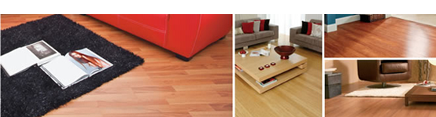
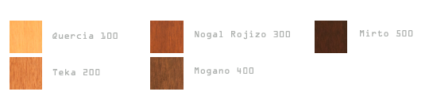
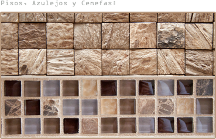
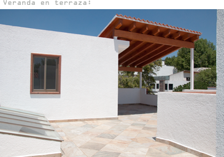

Personaliza tu hogar
En Dycemo te ofrecemos la opción de personalizar tu casa con materiales de la más alta calidad. Te presentamos las caracteristicas que puedes modificar a tu hogar:
Cocinas - Escoge entre una cocina clásica de madera o una cocina moderna de MDF. La cocina de madera puede barnizarse en tres tonalidades distintas y la cocina de MDF también tiene tres combinaciones de colores a escoger.
Cubiertas de Cocina - Nuestra cubierta de línea es Evoke de alta tecnología con opción a cambio por Granito o Cuarzo (todos los materiales tienen dos o tres tonos distintos).
Pisos, Azulejos & Cenfas - Arma tu casa con nuestros acabados de línea o personalizalos con ayuda de uno de nuestro arquitectos.
Pisos Laminados - Te ofrecemos una variedad de 4 calidades distintas de pisos laminados y 2 de bambú que puedes escoger de nuestro catálogo.

Barniz - Tenemos 5 tipos barniz para escoger: de claro a oscuro con tres tonalidades intermedias.

Canceles de Baño - Nuestro producto de línea son los Canceles de Aluminio Duranodic de lujo con acrílico transparente. También tenemos una opción de Cristal templado de 6mm con riel de aluminio y la opción más fina que son los canceles de cristal templado de 10mm con herrajes cromados.
Extansión Vestidor- Incluye un módulo de cajonera adicional y otro módulo de zapatera ideales para parejas con mucha ropa y calzado.
Veranda - Podemos construir una bonita veranda de madera y teja en tu terraza.
* Todos los cambios y opciones de personalización tendrán que ser cotizados.

